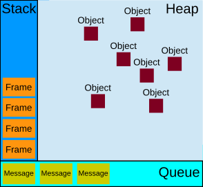

JavaScript 事件循环
一、为什么需要事件循环

从这张图中可以看到三个概念：栈、堆和队列。JavaScript 是单线程的，所以代码是从上往下执行的。若是有一个任务执行时间很长，就会造成阻塞，导致后面的任务久久无法被执行，怎么去解决这个问题呢？这里就引入了事件循环。
二、调用栈(call stack)
先来看一段 demo
function foo(b) { |
当我们调用 bar 函数时，会创建一个包含 bar 函数活动对象的帧，并推入栈中，接着 bar 函数调用了 foo 函数，又会创建一个包含 foo 函数活动对象的帧，推入栈中。foo 函数返回值，函数执行结束，会把相关帧从栈顶弹出，重复这个操作直到栈被清空。由于 JavaScript 是单线程的，所以只有一个调用栈，换句话说每次只能执行一个事件，因此要等到调用栈清空了才会去执行下一个事件，以上 demo 若是下面还有函数 fn 要执行，必须等到 bar 的调用栈被清空才会接着执行。此外，调用栈若是过长，浏览器会抛出错误，写代码的时候应该尽量避免使用过长的调用栈。
三、任务队列(callback queue)
上面讲了同步任务的执行顺序，这也是在没有事件循环之前就存在的。那么事件循环到底做了什么呢？我们改一下上面的 demo
function foo(b) { |
以上 demo 中 bar(7) 的输出值仍然是 42，而不是 49, y 的打印也是在 bar(7) 之后发生。会有这种结果的原因是当执行函数遇到到回调函数时，会把回调放入任务队列中挂起，先不把任务传给主线程，等到执行栈被清空了，才会去执行任务队列中的回调函数，由于队列遵循先进先出的原则，所以回调函数的执行顺序是从前往后的。
通过以上的一些 demo 解析，我们知道每次执行栈清空都会去查看任务队列的状态，若队列中有任务，则执行任务队列中的任务，否则继续下一个执行栈，这个循环的过程就是事件循环。
四、宏任务 vs 微任务
调用栈和任务队列是存在于 JavaScript 引擎中的，那传给调用栈和任务队列的任务来自于哪里呢？答案是宿主环境，当宿主环境解析代码遇到 JavaScript 函数时，会把相应的任务传给引擎，引擎再去做事件循环。我们把这类由宿主环境发起的任务称为宏任务，而把由引擎自身发起的任务称为微任务，微任务会优先于宏任务执行。
来看一下这个 demo
function fn() { |
这个 demo 的结果是1 0 3 2 4，执行 fn，把 fn 推入栈底，接着执行 fn2，把 fn2 推入栈底，fn2 中有一个 promise, promise 里面的回调函数是立即执行的，所以会先打印 1，promise 的 then 方法会在状态转变之后才执行，也就是一个微任务，放到任务队列的末尾，fn2 下一行是一个定时器，会被放入任务队列，打印 0，fn 函数执行之后打印 3，调用栈被清空，开始执行任务队列中的任务，先执行微任务，接着打印 2，再执行宏任务，打印4.
参考文献：
How JavaScript works: an overview of the engine, the runtime, and the call stack
本文标题：JavaScript 事件循环
文章作者：Canace
发布时间：2021-04-26
最后更新：2021-04-28
原始链接：https://canace.site/javascript-%E4%BA%8B%E4%BB%B6%E5%BE%AA%E7%8E%AF/
版权声明：转载请注明出处
分享